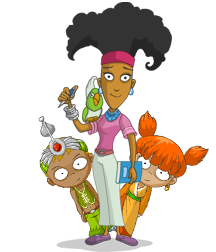

|

שאלות נפוצות
מה זה בכלל "עולם ווירטואלי?"
עולם ווירטואלי הוא "מקום" ברשת בו לכל גולש יש ייצוג ויזואלי (דמות, AVATAR) ובו הדברים שהגולש אומר ועושה נראים בזמן אמיתי על ידי גולשים אחרים שנמצאים במסך באותו זמן. אפשר לדמיין את זה כ"מגרש משחקים" אינטרנטי בו הילדים יכולים לשחק, לפגוש חברים, לצאת להרפתקאות ולפתח את הדמות שלהם.
חזרה למעלה.

במה שונה אקולוקו מעולמות ווירטואליים אחרים?
הדבר העיקרי שמייחד את אקולוקו הוא התכנים שבו. כל מילה, משחק או הרפתקה עוברים דרך מסננת סביבתית או חברתית, ומותאמים במיוחד לילדים. בנוסף, אקולוקו הוא אמנם עולם דמיוני, אך הוא עוסק בנושאים שמעסיקים אותנו גם בעולם האמיתי.
חזרה למעלה.

כיצד מתקשרים הילדים באקולוקו?
אקולוקו הוא עולם בינלאומי, ובכל מדינה יכולים הילדים לתקשר אחד עם השני בשפת אימם בעזרת מערכת הצ'אט. חשוב לזכור שכל שיחה באקולוקו היא פומבית ונצפית, ומטעמי בטיחות אין לילדים אפשרות לקיים "שיחות פרטיות". אם הילדים רוצים לפנות לחבר בפרטיות, הם יכולים לבחור לשלוח לו הודעה מתוך רשימת הודעות כתובות מראש.
חזרה למעלה.

מה הילדים עושים באקולוקו?
אקולוקו מציע מגוון רחב של פעילויות: הילדים יכולים לפתח ולדאוג לדמות שלהם, לבלות ולשוחח עם חברים, לצאת להרפתקאות, לשחק משחקים לבד או נגד ילדים אחרים, לפתור חידונים בנושאי סביבה וחברה, או פשוט לשוטט להנאתם בין עשרות המסכים ולגלות את העולם. כל משחק, חידון או הרפתקה שיסיימו הילדים יעניקו להם "נקודות פעילות" שיאפשרו להם להתקדם בדרגות במשחק, ולהרוויח "קוקואים" (המטבע של אקולוקו).
חזרה למעלה.

האם זה מסוכן?
כאמור, הדאגה הראשונה במעלה שלנו באקולוקו היא לספק לילדים מקום בו הרגשת הביטחון שלהם ופרטיותם נשמרים. אקולוקו הוא סביבה סגורה ומבוקרת שאין בה תכנים שלא עברו את הביקורת של מומחי החינוך שלנו. איננו חוסכים בשום משאב שיכול להגביר את השמירה על הביטחון והפרטיות של הילדים בעולם. אנו מקפידים על כך שסביבת הגלישה של הילדים תהא נעימה, רגועה, תומכת, ולא מאיימת וכדי לשמור על סטנדרט הבטיחות הגבוה שלנו, פיתחנו מערכת משוכללת המשלבת חינוך, טכנולוגיה ומשאבי אנוש.
חזרה למעלה.

האם אקולוקו עולה כסף?
ההרשמה והכניסה לאקולוקו הינה, ותמיד תהיה, חינם. עם זאת, לילדיכם תוצע האפשרות להעמיק את מעורבותם באקולוקו ולהצטרף ל"חלוצים". קבוצה מובחרת של ילדים שלקחו על עצמם לחקור ולגלות עולמות וגבולות חדשים באקולוקו. הצטרפות לחלוצים כרוכה בתשלום דמי חבר. חשוב לנו שתדעו שחלק מדמי החבר לחלוצים מופנים ל"קרן אקולוקו" קרן המוקדשת לתרומות לארגונים ועמותות (בעולם האמיתי) שעוסקים בעולם התוכן של אקולוקו: סביבה, חברה ובעלי חיים.
חזרה למעלה.

מהי קרן אקולוקו?
אחד מעמודי התווך בחזון אקולוקו הוא שמירה על קשר עם העולם האמיתי. זוהי הסיבה שהסיפורים וההרפתקאות באקולוקו עוסקים בנושאים שעמם כולנו מתמודדים כמו מיחזור וטיפול באשפה, חלוקה צודקת של מים ומשאבים אחרים, מאבק בכריתת היערות והקטנת פליטת גזי החממה. "קרן אקולוקו" הינה אמצעי נוסף שבעזרתו אנו שומרים על קשר עם המתרחש בעולם האמיתי. כספי הקרן מופרשים מדמי החבר של "החלוצים" באקולוקו, ובכל כמה שבועות נערכות בין הילדים בחירות בהן הם מחליטים באופן דמוקרטי לאיזו מטרה לתרום את כספי הקרן: לחברה, לסביבה או לארגונים למען בעלי החיים.
חזרה למעלה.

מי הם "הסיירים" באקולוקו?
סיירי אקולוקו הם קבוצת ילדים הנבחרת על פי רצונם להיות מעורבים יותר בעולם ובפעילויות, ובנכונותם לשמור על כללי העולם ולעזור לילדים אחרים. תפקידם של הסיירים הינו לסייע לילדים חדשים באקולוקו בצעדיהם הראשונים בעולם, ולעבוד בשיתוף פעולה עם המנהלים כדי לדאוג שכללי העולם נשמרים בכל רגע נתון. ניתן לזהות את הסיירים לפי הילת המלאך שמעל ראשיהם.
חזרה למעלה.
|